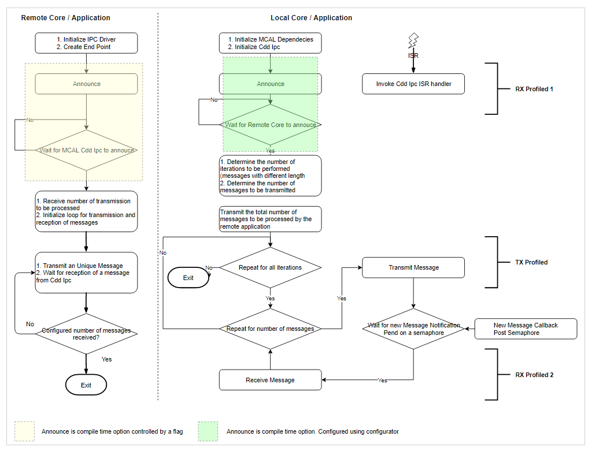

|
MCUSW
|
|
MCUSW
|
This application measures the CPU cycles required for transmission, reception of N number of bytes to, from a given core. As an example communication between MCU 1 0 and MCU 2 1 will be considered (or other cores). Similar approach would be employed for other cores. Please refer (Supported Drivers) for details on core that can host MCAL
Simulates transmission and reception of messages of different length, including standard lengths of 8 bytes and 64 bytes.
| SoC | Host Core | Remote Cores | Comments |
|---|---|---|---|
| J721E | MCU 1 0 | MCU 2 1 | MCAL could be hosted on other cores but this demo application runs only on MCU 1 0, at this point of time |
This application depends on multiple components and are detailed in sections below
This application depends on multiple components and are detailed in sections below
Back To Top
The flow chart below depicts the profiling application
Note: Both applications need to be used with same OS.

Back To Top
Back To Top
Back To Top
Back To Top
| Revision | Date | Author | Description | Status |
|---|---|---|---|---|
| 0.1 | 14 Apr 2019 | Sujith S | Initial Version | Under Review |
| 0.2 | 18 Apr 2019 | Sujith S | Addressed Review comments | Approved |
| 0.3 | 16 Jul 2019 | Sujith S | Included updates based on J721E | Approved |
| 0.4 | 8 Aug 2019 | Sunil M S | Updates profile numbers for release 00.09.01 | Approved |
| 0.5 | 16 Oct 2019 | Sujith S | Updates profile numbers for release 01.00.00 | Approved |
| 0.6 | 17 Feb 2020 | Sujith S | Re Organized the document | Approved |
| 0.7 | 22 Jun 2021 | Nikki S | 1.03.03 Release updates | Approved |
 1.8.6
1.8.6